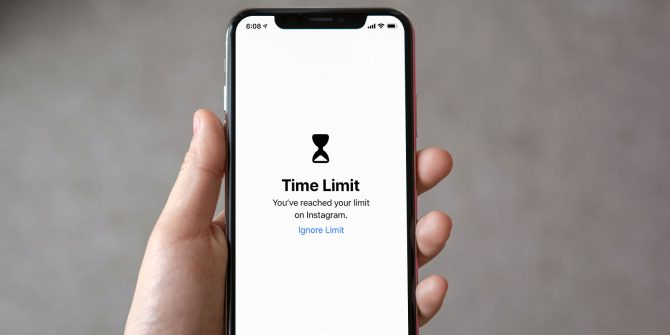

التكنولوجيا اليوم أصبحت جزءًا لا يتجزأ من حياتنا اليومية. لكن الفرق بين من يستفيد منها ومن يهدر وقته يعتمد على "الاستخدام الصحيح".

ماذا نعني بالاستخدام الصحيح؟
الاستخدام الصحيح يعني أن توظف التقنية لتطوير ذاتك، تعلم مهارات جديدة، أو تسهيل حياتك اليومية، بدلاً من الانغماس في محتوى لا يضيف لك قيمة.
خطوات عملية لتطبيق الاستخدام الصحيح
- ضع هدفًا محددًا قبل الدخول إلى الإنترنت.
- حدد وقتًا لكل نشاط رقمي حتى لا تضيّع الساعات.
- اختر مصادر موثوقة للتعلم والمعلومات.
- وازن بين الوقت أمام الشاشة والأنشطة الواقعية.
فوائد الالتزام بالاستخدام الصحيح
عندما تدير استخدامك للتقنية بوعي، ستلاحظ زيادة في إنتاجيتك، تحسن في صحتك النفسية والجسدية، وتطورًا في مهاراتك العملية والشخصية.
التحديات وكيفية التغلب عليها
قد تواجه صعوبة في البداية بسبب الإدمان الرقمي، لكن بالصبر والالتزام ستنجح. يمكنك الاستعانة بتطبيقات تحد من وقتك على وسائل التواصل الاجتماعي.
الخاتمة
الاستخدام الصحيح يبدأ من هنا: من وعيك واختيارك. اجعل التقنية أداة تبني حياتك، لا وسيلة تستهلك وقتك بلا عائد. القرار بيدك دائمًا.